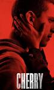
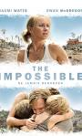
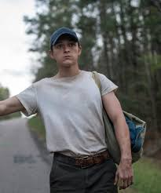
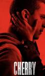
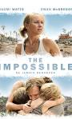
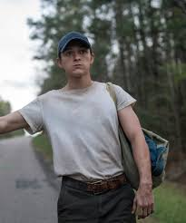

- SPIDER-MAN:NO WAY HOME
- SPIDER-MAN:HOMECOMING
- CHERRY
- UNCHARTED
 





Thomas Stanley Holland is an English actor. His accolades include a British Academy Film Award and three Saturn Awards. He featured on the Forbes 30 Under 30 Europe list of 2019. Some publications have called him one of the most popular actors of his generation. Wikipedia Born: 1 June 1996 (age 27 years), Kingston upon Thames, United Kingdom Height: 1.69 m Parents: Dominic Holland, Nikki Holland Siblings: Harry Holland, Sam Holland, Paddy Holland Works: Roles and awards
TOM HOLLAND'S MOST LOVED MOVIE BY THE AUDIENCE
| YEAR | TITLE | ROLE | NOTES |
|---|---|---|---|
| 2010 | ARRIETTY | SHO | British english dub;voice role |
| 2012 | THE IMPOSSIBLE | Lucas Bennett | voice role |
| 2013 | HOW I LIVE NOW | Isaac | |
| 2014 | BILLY ELLIOT THE MUSICAL LIVE | Former Billy | Cameo |
| 2015 | TWEET | Himself | Short film;Also director |
| 2016 | CAPTAIN AMERICA:Civil War | Peter parkar/spiderman | John |
Holland achieved international recognition playing Spider-Man in six Marvel Cinematic Universe (MCU) superhero films, beginning with Captain America: Civil War (2016). The following year, Holland received the BAFTA Rising Star Award and became the youngest actor to play a title role in an MCU film in Spider-Man: Homecoming. The sequels, subtitled Far From Home (2019) and No Way Home (2021), each grossed more than $1 billion worldwide, and the latter became the highest-grossing film of the year. He had another action film role in Uncharted (2022), and also expanded to play against-type roles in the crime dramas The Devil All the Time (2020) and Cherry (2021). Holland has additionally directed the short film Tweet (2015) and voiced roles in computer-animated features,
including Spies in Disguise (2019) and Onward (2020).
SAVE
Tom Holland and Zendaya have brought romance back to pop culture. Back in 2017, their press tour for Spider-Man: Homecoming was a flirtatious tour de force: Zendaya always doubled over in laughter, Tom comforting an anxious Zendaya with a gentle hand on her knee, both of them constantly pulling the same silly face or one-liner out at the same exact time.
While the actors have always been private about their relationship, Zendaya opened up to Vogue in her recent cover story, saying that, these days, they are not letting paparazzi stop them from enjoying their lives. This includes trips to Paris, Usher concerts, and prosaic outings to the grocery store, photographers be damned. A day in the Louvre? They wouldn’t miss it. “You just kind of get used to the fact that, Oh, I’m also one of these art pieces you’re going to take a picture of.
I just gotta be totally cool with it and just live my life,” she told Vogue.Years of friendship have blossomed into romance, and it seems that Zendaya and Holland are more in love than ever. As we, the public, continue to swoon over this couple, let’s take a moment to go over all their notable moments from 2016 to now.
2016: Tom Holland and Zendaya are cast in Marvel’s reboot of the Spider-Man franchise
This is where it all begins. The two are cast as Spiderman and MJ for Marvel’s reboot of the Spider-Man franchise. The first installment, Spider-Man: Homecoming, begins production in June 2016 and is released in July 2017. Producer Amy Pascal warned them not to date, telling The New York Times, “I took Tom and Zendaya aside, separately, when we first cast them and gave them a lecture: ‘Don’t go there—just don’t. Try not to.” Thankfully for all of us, Pascal’s warning didn’t quite take.